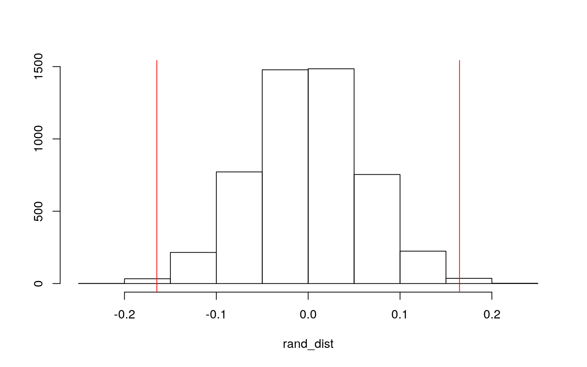
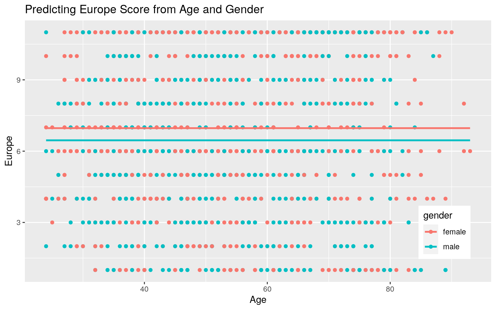
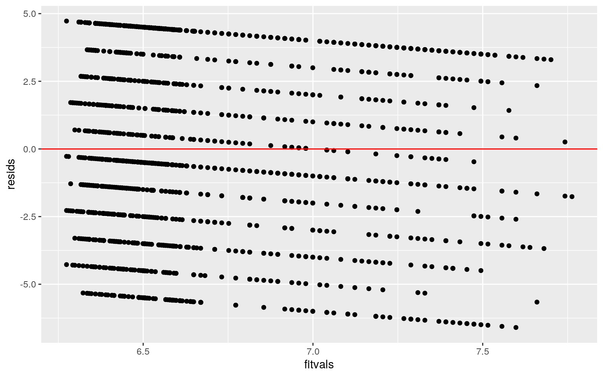
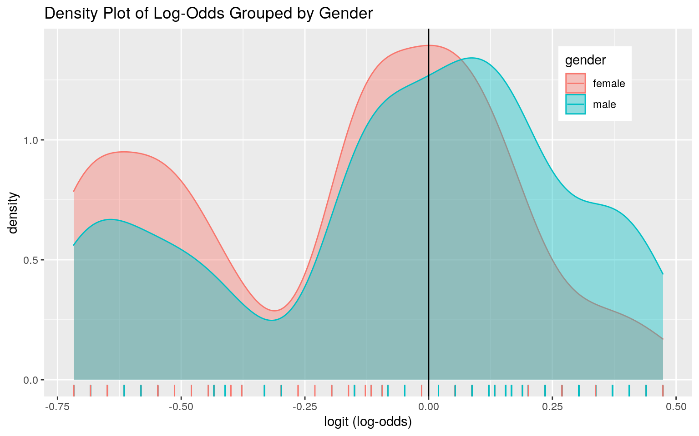
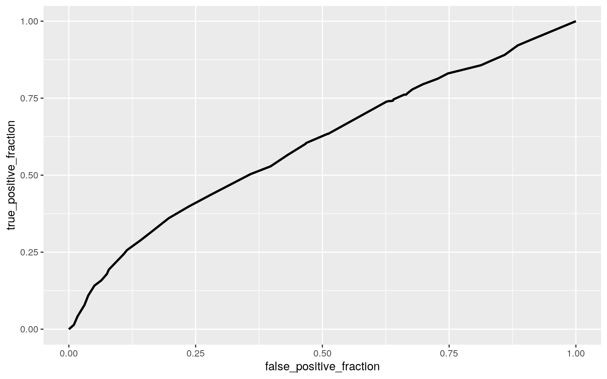

Chelsea Vu (clv743)
For my project, I chose the BEPS dataset, which includes data drawn from the 1997-2001 British Election Panel Study (BEPS). This dataset has 10 variables and 1525 observations. The variable “vote” describes the voter’s party choice, having “Conservative”, “Labour” and “Liberal Democrat” groups. The variable “age” describes the voter’s age in years. The variable “economic.cond.national” describes the assessment rating of current national economic conditions, 1 to 5 when the voter voted, while the “economic.cond.household” variable describes the assessment of current household economic conditions, 1 to 5. Higher numbers in these variables indicate better economic conditions. “Blair”, “Hague” and “Kennedy” are variables that drescribe the voter’s assessment of the Labour, Conservative and Liberal Democrat leaders, respectively. The “Europe” variable decribes the respondents’ attitudes toward European integration, with high scores representing ‘Eurosceptic’ sentiment. The “political.knowledge” variable describes the respondent’s knowledge of parties’ positions on European integration on a scale of 0 to 3, with 3 indicating the respondent is very knowledgable. Finally “gender” describes whether the respondent identified as male or female.
library(carData)
data(BEPS)
# multivariate normality assumption
library(rstatix)
group <- BEPS$vote
DVs <- BEPS %>% select(age, economic.cond.national, economic.cond.household,
Blair, Hague, Kennedy, Europe, political.knowledge)
sapply(split(DVs, group), mshapiro_test)## Conservative Labour Liberal Democrat
## statistic 0.9883996 0.9928497 0.9852662
## p.value 0.0009977469 0.001591821 0.001424588# MANOVA
man1 <- manova(cbind(age, economic.cond.national, economic.cond.household,
Blair, Hague, Kennedy, Europe, political.knowledge) ~ vote,
data = BEPS)
summary(man1)## Df Pillai approx F num Df den Df Pr(>F)
## vote 2 0.50979 64.827 16 3032 < 2.2e-16 ***
## Residuals 1522
## ---
## Signif. codes: 0 '***' 0.001 '**' 0.01 '*' 0.05 '.' 0.1 ' ' 1# ANOVA
summary.aov(man1)## Response age :
## Df Sum Sq Mean Sq F value Pr(>F)
## vote 2 4789 2394.27 9.8118 5.835e-05 ***
## Residuals 1522 371399 244.02
## ---
## Signif. codes: 0 '***' 0.001 '**' 0.01 '*' 0.05 '.' 0.1 ' ' 1
##
## Response economic.cond.national :
## Df Sum Sq Mean Sq F value Pr(>F)
## vote 2 136.79 68.397 99.524 < 2.2e-16 ***
## Residuals 1522 1045.99 0.687
## ---
## Signif. codes: 0 '***' 0.001 '**' 0.01 '*' 0.05 '.' 0.1 ' ' 1
##
## Response economic.cond.household :
## Df Sum Sq Mean Sq F value Pr(>F)
## vote 2 60.06 30.0297 36.334 3.849e-16 ***
## Residuals 1522 1257.91 0.8265
## ---
## Signif. codes: 0 '***' 0.001 '**' 0.01 '*' 0.05 '.' 0.1 ' ' 1
##
## Response Blair :
## Df Sum Sq Mean Sq F value Pr(>F)
## vote 2 466.99 233.494 217.16 < 2.2e-16 ***
## Residuals 1522 1636.45 1.075
## ---
## Signif. codes: 0 '***' 0.001 '**' 0.01 '*' 0.05 '.' 0.1 ' ' 1
##
## Response Hague :
## Df Sum Sq Mean Sq F value Pr(>F)
## vote 2 510.59 255.293 216.14 < 2.2e-16 ***
## Residuals 1522 1797.71 1.181
## ---
## Signif. codes: 0 '***' 0.001 '**' 0.01 '*' 0.05 '.' 0.1 ' ' 1
##
## Response Kennedy :
## Df Sum Sq Mean Sq F value Pr(>F)
## vote 2 118.51 59.257 54.147 < 2.2e-16 ***
## Residuals 1522 1665.66 1.094
## ---
## Signif. codes: 0 '***' 0.001 '**' 0.01 '*' 0.05 '.' 0.1 ' ' 1
##
## Response Europe :
## Df Sum Sq Mean Sq F value Pr(>F)
## vote 2 2496.4 1248.21 134.97 < 2.2e-16 ***
## Residuals 1522 14075.2 9.25
## ---
## Signif. codes: 0 '***' 0.001 '**' 0.01 '*' 0.05 '.' 0.1 ' ' 1
##
## Response political.knowledge :
## Df Sum Sq Mean Sq F value Pr(>F)
## vote 2 42.57 21.2844 18.554 1.093e-08 ***
## Residuals 1522 1745.95 1.1471
## ---
## Signif. codes: 0 '***' 0.001 '**' 0.01 '*' 0.05 '.' 0.1 ' ' 1# Post-Hoc t-tests
pairwise.t.test(BEPS$age, BEPS$vote, p.adj = "none")##
## Pairwise comparisons using t tests with pooled SD
##
## data: BEPS$age and BEPS$vote
##
## Conservative Labour
## Labour 3.5e-05 -
## Liberal Democrat 0.00059 0.97601
##
## P value adjustment method: nonepairwise.t.test(BEPS$economic.cond.national, BEPS$vote, p.adj = "none")##
## Pairwise comparisons using t tests with pooled SD
##
## data: BEPS$economic.cond.national and BEPS$vote
##
## Conservative Labour
## Labour < 2e-16 -
## Liberal Democrat 1.9e-08 6.2e-11
##
## P value adjustment method: nonepairwise.t.test(BEPS$economic.cond.household, BEPS$vote, p.adj = "none")##
## Pairwise comparisons using t tests with pooled SD
##
## data: BEPS$economic.cond.household and BEPS$vote
##
## Conservative Labour
## Labour 3.1e-16 -
## Liberal Democrat 0.016 1.1e-06
##
## P value adjustment method: nonepairwise.t.test(BEPS$Blair, BEPS$vote, p.adj = "none")##
## Pairwise comparisons using t tests with pooled SD
##
## data: BEPS$Blair and BEPS$vote
##
## Conservative Labour
## Labour <2e-16 -
## Liberal Democrat <2e-16 <2e-16
##
## P value adjustment method: nonepairwise.t.test(BEPS$Hague, BEPS$vote, p.adj = "none")##
## Pairwise comparisons using t tests with pooled SD
##
## data: BEPS$Hague and BEPS$vote
##
## Conservative Labour
## Labour <2e-16 -
## Liberal Democrat <2e-16 0.069
##
## P value adjustment method: nonepairwise.t.test(BEPS$Kennedy, BEPS$vote, p.adj = "none")##
## Pairwise comparisons using t tests with pooled SD
##
## data: BEPS$Kennedy and BEPS$vote
##
## Conservative Labour
## Labour 4.7e-10 -
## Liberal Democrat < 2e-16 3.6e-08
##
## P value adjustment method: nonepairwise.t.test(BEPS$Europe, BEPS$vote, p.adj = "none")##
## Pairwise comparisons using t tests with pooled SD
##
## data: BEPS$Europe and BEPS$vote
##
## Conservative Labour
## Labour <2e-16 -
## Liberal Democrat <2e-16 0.054
##
## P value adjustment method: nonepairwise.t.test(BEPS$political.knowledge, BEPS$vote, p.adj = "none")##
## Pairwise comparisons using t tests with pooled SD
##
## data: BEPS$political.knowledge and BEPS$vote
##
## Conservative Labour
## Labour 3.4e-08 -
## Liberal Democrat 0.51 1.6e-05
##
## P value adjustment method: none# bonferroni
0.05/33## [1] 0.001515152# probability of at least one type I error (unadjusted)
1 - (0.95^33)## [1] 0.8159741MANOVA has many assumptions. Some were met by this dataset, including random samples and independent observations. By performing the formal multivariate normality assumption test however, it can be seen that multivariate normality of DVs assumption was not met, since each group had a significant p-value. The results of the MANOVA give a significant p-value of <2.2e-16, indicating that significant differences were found among the three voter party choices, for at least one of the dependent variables. Univariate ANOVAs for each dependent variable were conducted as follow-up tests to the MANOVA. From these tests it can be seen that all of the response variables (age, “economic.cond.national”, “economic.cond.household”, “Blair”, “Hague”, “Kennedy”, “Europe” and political.knowledge) were significant with pvalues of 5.835e-05, < 2.2e-16, 3.849e-16, < 2.2e-16, < 2.2e-16, < 2.2e-16, < 2.2e-16 and 1.093e-08, respectively. When performing the t-tests, it can be seen that all 3 parties affiliations differed significantly from eachother in terms of the variables “economic.cond.national”, “Blair” and“Kennedy”. The level of significance used was based on the Bonferroni correction, which gave a significance value of 0.001515. In total, 1 MANOVA, 8 ANOVA and 24 t-tests were performed, which is a total of 33 tests. The probability of making a type I error (unadjusted) was calculated to be 0.81597.
library(dplyr)
set.seed(348)
BEPS %>% group_by(gender) %>% summarize(means = mean(Blair)) %>%
summarize(diff(means))## # A tibble: 1 x 1
## `diff(means)`
## <dbl>
## 1 0.165rand_dist <- vector()
for (i in 1:5000) {
new <- data.frame(Blair = sample(BEPS$Blair), condition = BEPS$gender)
rand_dist[i] <- mean(new[new$condition == "female", ]$Blair) -
mean(new[new$condition == "male", ]$Blair)
}
mean(rand_dist < -0.1647707 | rand_dist > 0.1647707)## [1] 0.0056{
hist(rand_dist, main = "", ylab = "")
abline(v = c(0.1647707, -0.1647707), col = "red")
} A randomization test was performed to observe the mean differences in “Blair” score between males and females. The null hypothesis is that the mean “Blair” score is the same for males vs. females. The alternative hypothesis is that the mean “Blair” score is different for males vs. females. When the test was run, a p-value of 0.0056 was recieved, which means that we reject the null hypothesis. This means that there is a significant difference in mean “Blair” scores between males and females.
library(ggplot2)
fit <- lm(Europe ~ gender * age, data = BEPS)
BEPS$age_c <- BEPS$age - mean(BEPS$age)
fit_c <- lm(Europe ~ gender * age_c, data = BEPS)
summary(fit_c)##
## Call:
## lm(formula = Europe ~ gender * age_c, data = BEPS)
##
## Residuals:
## Min 1Q Median 3Q Max
## -6.5979 -2.5176 -0.3776 3.4094 4.7258
##
## Coefficients:
## Estimate Std. Error t value Pr(>|t|)
## (Intercept) 6.961984 0.115172 60.448 < 2e-16 ***
## gendermale -0.504149 0.168443 -2.993 0.00281 **
## age_c 0.020633 0.007191 2.869 0.00417 **
## gendermale:age_c -0.014548 0.010764 -1.351 0.17675
## ---
## Signif. codes: 0 '***' 0.001 '**' 0.01 '*' 0.05 '.' 0.1 ' ' 1
##
## Residual standard error: 3.281 on 1521 degrees of freedom
## Multiple R-squared: 0.01173, Adjusted R-squared: 0.009784
## F-statistic: 6.02 on 3 and 1521 DF, p-value: 0.0004486ggplot(BEPS, aes(x = age, y = Europe)) + geom_point(aes(color = gender)) +
geom_smooth(method = "lm", formula = y ~ 1, se = F, fullrange = T,
aes(color = gender)) + theme(legend.position = c(0.9,
0.19)) + xlab("Age") + ggtitle("Predicting Europe Score from Age and Gender")
# checking assumptions
library(sandwich)
library(lmtest)
resids <- lm(Europe ~ gender * age_c, data = BEPS)$residuals
fitvals <- fit_c$fitted.values
ggplot() + geom_point(aes(fitvals, resids)) + geom_hline(yintercept = 0,
color = "red")
ks.test(resids, "pnorm", mean = 0, sd(resids))##
## One-sample Kolmogorov-Smirnov test
##
## data: resids
## D = 0.10276, p-value = 2.065e-14
## alternative hypothesis: two-sidedbptest(fit_c)##
## studentized Breusch-Pagan test
##
## data: fit_c
## BP = 64.051, df = 3, p-value = 8.004e-14# Robust Standard Errors:
# uncorrected
summary(fit_c)$coef[, 1:2]## Estimate Std. Error
## (Intercept) 6.96198399 0.115172348
## gendermale -0.50414935 0.168443439
## age_c 0.02063340 0.007191063
## gendermale:age_c -0.01454762 0.010764362# corrected
coeftest(fit_c, vcov = vcovHC(fit_c))[, 1:2]## Estimate Std. Error
## (Intercept) 6.96198399 0.112018465
## gendermale -0.50414935 0.169492600
## age_c 0.02063340 0.006988731
## gendermale:age_c -0.01454762 0.011100618A linear regression was run to predict respondents’ attitudes toward European integration from age and gender. The intercept of 6.962 is the mean “Europe” score for females with an age of 0. Males of age 0 have average “Europe” score thats 0.504 less than fameles of age 0. The slope of age on “Europe” score for males is 0.0145 less than that for females. Our R-squared value is 0.117, indicating that 1.17% of variability in “Europe” is explained. The Kolmogorov-Smirnov test for normality resulted in a p-value of 2.065e-14, indicating that the normality assumption was violated. The bptest p-value was 8.004e-14 indicating that the homoskedascity and linearity assumptions were not met either. These can also be observed by the graph of the residuals vs fitted values. The “coeftest” functions were used to add corrected SEs. This did not change the coefficients estimates and only changed the standard errors values slightly. In comparison to the original standard errors, the intercept and “age_c” robust standard errors were smaller and the “gendermale” and “gendermale:age_c” SEs were larger.
library(dplyr)
boot_dat <- sample_frac(BEPS, replace = T)
samp_distn <- replicate(5000, {
boot_dat <- sample_frac(BEPS, replace = T)
fit2 <- lm(Europe ~ gender * age_c, data = boot_dat)
coef(fit2)
})
samp_distn %>% t %>% as.data.frame %>% summarize_all(sd)## (Intercept) gendermale age_c gendermale:age_c
## 1 0.1108539 0.1700422 0.006963324 0.0110693Bootstrapped standard errors were found by resampling observations. In comparison to the original standard errors, the intercept and “age_c” bootstrapped SE’s are smaller, but the “gendermale” and “gendermale:age_c” bootstrapped SE’s are larger. In comparison to the robust standard errors, the intercept bootstrapped SE is smaller, and the “gendermale”, “age_c” and “gendermale:age_c” bootstrapped SE’s were larger. These differences were not large.
logfit <- glm(gender ~ Europe + political.knowledge, data = BEPS,
family = "binomial")
coeftest(logfit)##
## z test of coefficients:
##
## Estimate Std. Error z value Pr(>|z|)
## (Intercept) -0.343505 0.149659 -2.2952 0.02172 *
## Europe -0.033988 0.015953 -2.1305 0.03313 *
## political.knowledge 0.283615 0.049249 5.7588 8.471e-09 ***
## ---
## Signif. codes: 0 '***' 0.001 '**' 0.01 '*' 0.05 '.' 0.1 ' ' 1exp(0.033988)## [1] 1.034572exp(0.283615)## [1] 1.327922# confusion matrix
probs <- predict(logfit, type = "response")
table(predict = as.numeric(probs > 0.5), truth = BEPS$gender) %>%
addmargins## truth
## predict female male Sum
## 0 521 354 875
## 1 291 359 650
## Sum 812 713 1525library(tidyverse)
class_diag(probs, BEPS$gender)## acc sens spec ppv auc
## male 0.5770492 0.5035063 0.6416256 0.5523077 0.6015759logit <- predict(logfit, type = "link")
# Density Plot
BEPS %>% ggplot() + geom_density(aes(logit, color = gender, fill = gender),
alpha = 0.4) + theme(legend.position = c(0.85, 0.85)) + geom_vline(xintercept = 0) +
xlab("logit (log-odds)") + geom_rug(aes(logit, color = gender)) +
geom_text(x = -5, y = 0.07, label = "TN = 431") + geom_text(x = -1.75,
y = 0.008, label = "FN = 19") + geom_text(x = 1, y = 0.006,
label = "FP = 13") + geom_text(x = 5, y = 0.04, label = "TP = 220") +
ggtitle("Density Plot of Log-Odds Grouped by Gender")
# ROC
library(plotROC)
ROCplot <- ggplot(BEPS) + geom_roc(aes(d = gender, m = probs),
n.cuts = 0)
ROCplot
calc_auc(ROCplot)## PANEL group AUC
## 1 1 -1 0.6015759A logistic regression was run to predict gender, which is a binary variable, from “Europe” score and political knowledge. Since the binary used is categorical, “female” is assumed to be “0”, while “male” is assumed to be “1”. Controlling for political knowledge, “Europe” score for males and females are significantly different(p-value=0.03313). Controlling for political knowledge, for every 1 unit increase in “Europe” score, the odds of being male (“1”) decrease by a factor of e^(0.033988)= 1.0346 (they decrease by 3.46%). Controlling for “Europe” score, every 1 unit increase in political knowlege, the odds of being male (“1”) increase by a factor of e^(0.283615)= 1.327922 (they increase by 32.79%). This prediction is also significant.
By performing the confusion matrix and looking at the classification diagnostics, it can be seen that the accuracy is 0.5770492, the sensitivity (TPR) is 0.5035063, the specificity(TNR) is 0.6416256, the precision (PPV) is 0.5523077 and the AUC is 0.6015759. The AUC describes the probability that a randomly selected female has a higher predicted probability than a randomly selected male.
The density plot of the log odds grouped by gender shows us that there are a lot of misclassifications(false positives and false negatives) because there is a large area of overlap between the two curves. This also means that it is difficult to determine gender based off of “Europe” score and political knowledge.
The ROC curve also shows us this, as it is not close to a perfect prediction ROC, in which TPR would be 1 while FPR would be 0 for any cutoff except 100%. This makes sense given out lower AUC of 0.6015759.
allfit <- glm(gender ~ ., data = BEPS, family = "binomial")
coef(allfit)## (Intercept) voteLabour voteLiberal Democrat
## -0.955207829 0.109110995 0.085183719
## age economic.cond.national economic.cond.household
## -0.001238011 0.071191136 0.029127244
## Blair Hague Kennedy
## 0.087996820 0.019548008 -0.065232570
## Europe political.knowledge age_c
## -0.017291256 0.302892295 NAprobs2 <- predict(allfit, type = "response")
class_diag(probs2, BEPS$gender)## acc sens spec ppv auc
## male 0.5790164 0.5007013 0.6477833 0.55521 0.6101448# K-fold CV
set.seed(1234)
k = 10 #choose number of folds
datak <- BEPS[sample(nrow(BEPS)), ]
foldsk <- cut(seq(1:nrow(BEPS)), breaks = k, labels = F)
diagsk <- NULL
for (i in 1:k) {
traink <- datak[foldsk != i, ]
testk <- datak[foldsk == i, ]
truthk <- testk$gender
fit3 <- glm(gender ~ ., data = traink, family = "binomial")
probs3 <- predict(fit3, newdata = testk, type = "response")
diagsk <- rbind(diagsk, class_diag(probs3, truthk))
}
summarize_all(diagsk, mean)## acc sens spec ppv auc
## 1 0.5757998 0.4969839 0.6482415 0.554085 0.5974683# LASSO
library(glmnet)
set.seed(1234)
y <- as.matrix(BEPS$gender) #grab response
x <- model.matrix(gender ~ ., data = BEPS)[, -1]
head(x)## voteLabour voteLiberal Democrat age economic.cond.national
## 1 0 1 43 3
## 2 1 0 36 4
## 3 1 0 35 4
## 4 1 0 24 4
## 5 1 0 41 2
## 6 1 0 47 3
## economic.cond.household Blair Hague Kennedy Europe political.knowledge
## 1 3 4 1 4 2 2
## 2 4 4 4 4 5 2
## 3 4 5 2 3 3 2
## 4 2 2 1 3 4 0
## 5 2 1 1 4 6 2
## 6 4 4 4 2 4 2
## age_c
## 1 -11.182295
## 2 -18.182295
## 3 -19.182295
## 4 -30.182295
## 5 -13.182295
## 6 -7.182295cvlass <- cv.glmnet(x, y, family = "binomial")
lasso1 <- glmnet(x, y, family = "binomial", lambda = cvlass$lambda.1se)
coef(lasso1)## 12 x 1 sparse Matrix of class "dgCMatrix"
## s0
## (Intercept) -0.3481946
## voteLabour .
## voteLiberal Democrat .
## age .
## economic.cond.national .
## economic.cond.household .
## Blair .
## Hague .
## Kennedy .
## Europe .
## political.knowledge 0.1408915
## age_c .# CV on LASSO
set.seed(535)
k = 10
dataklass <- BEPS %>% sample_frac #put rows of dataset in random order
foldsklass <- ntile(1:nrow(dataklass), n = 10) #create fold labels
diagsklass <- NULL
for (i in 1:k) {
trainklass <- dataklass[foldsklass != i, ] #create training set (all but fold i)
testklass <- dataklass[foldsklass == i, ] #create test set (just fold i)
truthklass <- testklass$gender #save truth labels from fold i
fitklass <- glm(gender ~ political.knowledge, data = trainklass,
family = "binomial")
probsklass <- predict(fitklass, newdata = testklass, type = "response")
diagsklass <- rbind(diagsklass, class_diag(probsklass, truthklass))
}
diagsklass %>% summarize_all(mean)## acc sens spec ppv auc
## 1 0.5443283 0.433638 0.6816993 0.5972583 0.5951724A logistic regression was run predicting gender from all the other variables. Looking at the class dianostics, the accuracy is 0.5790164 , the sensitivity (TPR) is 0.5007013, the specificity(TNR) is 0.6477833, the precision (PPV) is 0.55521 and the AUC is 0.6101448.In comparison to the previous model, this model has a higher accuracy, specificity, precision and AUC. It also has a lower sensitivity. Ideally these values would be closer to 1, so although these values are generally higher than the previous model, our in-sample performance is still mediocre.
When running the 10-fold CV, the accuracy was 0.5757998 , the sensitivity (TPR) was 0.4969839, the specificity(TNR) was 0.6482415, the precision (PPV) was 0.554085 and the AUC was 0.5974683. These lower values indicate that our out-of-sample performance is worse than our in-sample performance. This can be a sign of slight overfitting.
Looking at the LASSO test, it can be seen that political knowledge is the most predicting variable because it is the only variable with an s0 score (s0=0.1408915). Therefore, only the political knowledge variable was retained for the following CV.
When a 10-fold CV was run using only the political knowledge variable, the accuracy was 0.5443283, the sensitivity (TPR) was 0.433638, the specificity(TNR) was 0.6816993, the precision (PPV) was 0.5972583 and the AUC was 0.5951724. In comparison to the 10 fold CV using all variables, this CV resulted in a lower accuracy, a lower TPR, a higher TNR, a higher PPV, and a lower overall AUC. This means that this CV was slightly worse performing than the previous CV and the in-sample performances. This may mean this model had more overfitting.